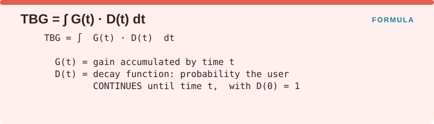
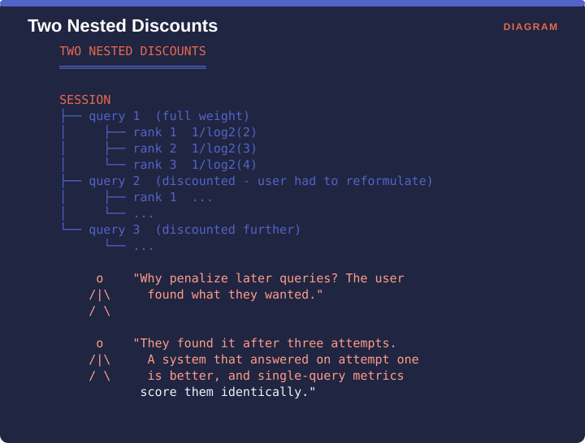
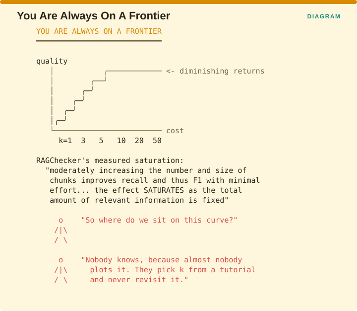

Measuring Retrieval › Chapter 12 - Efficiency, Cost, and Time
Chapter 12 - Efficiency, Cost, and Time
12.0 Reclaiming a dimension
Chapter 1 promoted efficiency and cost from a footnote to a full dimension. This chapter is the classical half of that promotion, and Supplement B Part D is the RAG half.
The classical measures themselves are unglamorous and thoroughly understood.
| Metric | Source | Note |
|---|---|---|
| Query response time / latency | Manning Ch. 8 VERIFIED | The user-facing number |
| Query throughput | Manning Ch. 4 VERIFIED | Capacity |
| Indexing throughput | Manning Ch. 4 VERIFIED | Gates your refresh policy |
| Index size | Manning Ch. 5 VERIFIED | Storage and memory pressure |
| Query-processing cost | Manning Ch. 7 VERIFIED | Per-query compute |
| Crawl throughput | Manning Ch. 20 VERIFIED | Ingestion capacity |
Re-listing those is not the contribution of this chapter. The contribution is establishing that time is not simply a cost sitting alongside quality, because for a reader with a finite budget time is part of the quality measurement itself.
12.1 Time-Biased Gain
One-line: Gain accumulated as a function of time spent, discounted by the probability the user is still reading.
Formula (structure):

Facets: Efficiency/Cost + Correctness | session | ref | E2E | ESTABLISHED VERIFIED Source: Smucker & Clarke, Time-Based Calibration of Effectiveness Measures, SIGIR 2012, pp. 95-104, doi 10.1145/2348283.2348300 - SIGIR 2012 Best Paper
The problem it solves
Every metric in Chapters 5 through 8 discounts by rank, which quietly assumes that two documents at the same position cost the reader the same amount. They do not. A result with a clear snippet that takes three seconds to assess and a result with a poor snippet attached to a 400-page PDF occupy the same rank and consume wildly different amounts of the reader’s budget, and no rank-based metric can express the difference.
The idea
Time-biased gain replaces the rank discount with a time discount. Reading the formula, G(t) is the gain the reader has accumulated by time t, and D(t) is a decay function giving the probability that they are still reading at time t, starting at D(0) = 1 and falling from there. The measure integrates the two together, so gain that arrives after the reader has left contributes nothing.
The authors’ motivation makes the point concrete. Summaries are designed to speed up the rate at which users find relevant documents, and they do, so a metric ought to reflect the value a good summary adds by using a user model that accounts for the time required. Rank-based metrics are blind to snippet quality by construction, because a snippet does not change anybody’s rank.

The figure compares two result lists with identical nDCG. List A has a relevant document at rank 1 with a good snippet that takes three seconds to judge, and another at rank 2 on the same terms. List B has a relevant document at rank 1 with a bad snippet attached to a 40-page PDF that takes ninety seconds to judge, and another the same at rank 2.
nDCG scores them identically because the same documents were retrieved in the same order. Time-biased gain scores list A far higher, because the user gave up partway through the first item of list B. Retrieval was identical and the experience was not.
The decay curve in the lower panel is the mechanism. It starts at 1.0 and falls away over the first minute or two, so gain arriving at ninety seconds is worth a fraction of gain arriving at three, and rank has no way of representing that.
Advantages
- Unifies quality and cost in a single number, which no other metric in this volume does.
- Captures snippet quality and document-length effects that every rank-based metric ignores by construction.
- Grounded in observed behaviour, with decay functions calibrated from user studies rather than assumed.
- Best-paper recognition and a substantial follow-on literature, including Stochastic Simulation of Time-Biased Gain (CIKM 2012, pp. 2040-2044) VERIFIED and Modeling User Variance in Time-Biased Gain (HCIR 2012) VERIFIED.
Disadvantages
- Requires time estimates per document, covering document length, snippet quality and load time, which is instrumentation most teams do not have.
- The decay function has to be calibrated, ideally against your own users, because a borrowed D(t) is a borrowed user model and carries somebody else’s assumptions.
- Harder to compute and to explain than nDCG.
- Rarely reported, so there is nothing external to compare against.
Domain examples
Enterprise document search. An excellent fit and badly underused, because corpora with wildly varying document lengths, such as a two-page memo sitting beside a 400-page manual, are exactly where rank-based metrics mislead.
Mobile search. Time costs are large and variable, so TBG’s framing is the right one.
RAG. CAUTION The user’s reading time is spent on a single generated answer, so the direct translation does not work. The useful analogue is the model’s budget, meaning tokens consumed and whether the gain arrives inside the context window or past the point where attention has fallen off. Lost in the Middle effectively suggests a D(t) for language models, in the form of a decay function over position within the context. A formal time-biased measure for RAG remains an open opportunity.
Recommendation
If your corpus has highly variable document lengths, or your snippets vary in quality, TBG will tell you something nDCG structurally cannot.
Start cheaply by logging time-to-judgment inside your annotation tool. You will collect the input data as a by-product of work you are already doing, and you can decide later whether to compute the full measure.
12.2 Session metrics
12.2.1 sDCG
One-line: DCG extended across the multiple queries of a single search session, with later queries discounted.
Facets: Correctness | session | ref | R | ESTABLISHED VERIFIED Source: Järvelin, Price, Delcambre & Nielsen, Discounted Cumulated Gain Based Evaluation of Multiple-Query IR Sessions, ECIR 2008, LNCS 4956, pp. 4-15, doi 10.1007/978-3-540-78646-7_4
The problem it solves
The paper’s premise is a direct criticism of everything in Chapters 4 through 8: assuming one query per topic and per session is a poor representation of what people actually do. Real users search, look at the results, rephrase, and search again, and a metric that scores each of those queries independently cannot tell the difference between a system that answered immediately and one that took three attempts.
The idea
sDCG applies a second discount across the queries in a session, on top of DCG’s existing discount across ranks within each query. A relevant result that arrives in a later reformulation is worth less than the same result in the first query, because the user paid the effort of rephrasing to get there.

The figure draws the nesting. A session contains query 1 at full weight, with its ranks discounted internally by the usual 1/log2(k+1). Query 2 sits below it, discounted because the user had to reformulate to reach it, with its own internal rank discounts. Query 3 is discounted further still.
Asked why later queries should be penalized when the user did eventually find what they wanted, the answer is that they found it after three attempts. A system that answered on the first attempt is better, and single-query metrics score the two identically.
Advantages and disadvantages
| Advantages | Disadvantages |
|---|---|
| Models real multi-query behaviour | Requires session-level judgments and logs |
| Rewards answering early in the session | Two discount parameters to set and report |
| Captures reformulation cost, which no single-query metric can | Rarely implemented; little tooling |
| Graded relevance throughout | Session boundaries are ambiguous in practice |
12.2.2 SRBP - the session analogue of RBP
Source: Lipani, Carterette & Yilmaz, From a User Model for Query Sessions to Session Rank Biased Precision (SRBP), ICTIR 2019 VERIFIED
This completes a pattern the book has now traced three separate times.

RBP from §5.5 measures quality within a single ranking, from Moffat and Zobel in 2008. RBO from §7.2 compares two rankings, from Webber et al. in 2010. NRBP from §8.3.1 adds novelty, from Clarke et al. in 2009. SRBP measures quality across a session, from Lipani et al. in 2019. One user model, being geometric persistence with an explicit residual, extended in four directions.
The practical consequence is that learning RBP properly gets you the other three nearly for free, which makes it the best return on conceptual investment anywhere in classical retrieval.
Recommendation
Use sDCG or SRBP if your users reformulate, which for enterprise search and conversational RAG they overwhelmingly do. For conversational RAG in particular, your unit of analysis is the session rather than the query, which means every metric in Chapters 4 through 8 is measuring the wrong unit when you apply it there.
This is a real and largely unaddressed gap. Multi-turn RAG evaluation almost always reports per-turn metrics, and a per-turn metric cannot see that turn 3 was only necessary because turns 1 and 2 failed.
12.3 The cost-quality frontier
The practical synthesis of the chapter.

The figure plots quality against cost as k rises through 1, 3, 5, 10, 20 and 50. The curve climbs steeply at first and then flattens into diminishing returns, which is the shape RAGChecker measured directly: moderately increasing the number and size of chunks improves recall and therefore F1 with minimal effort, and the effect saturates because the total amount of relevant information available is fixed.
Asked where their own system sits on that curve, most teams do not know, because almost nobody plots it. They pick k from a tutorial and never revisit the choice.
The experiment worth running

For k in {1, 3, 5, 10, 20, 50}, record five things: Recall@k, your primary quality metric, Pairwise Redundancy, the prompt tokens consumed per query, and time-to-first-token at the median and the 95th percentile. Then plot quality against tokens and find the knee.
It costs an afternoon, almost nobody does it, and it is the single highest-value experiment in this volume.
Two published data points anchor what to expect. RAGChecker observed faithfulness rising from 88.1 to 92.2 as k moved from 5 to 20, so more context made the generator more faithful rather than less. RAG-X measured 22.0% pairwise redundancy at its best configuration, so more context also bought duplicated material. A sweep measures both effects as they occur in your system rather than in somebody else’s.
Measuring Retrieval · Madhava Gaikwad · First edition, September 2026